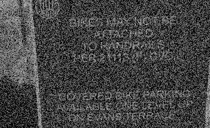
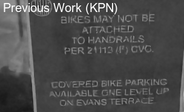
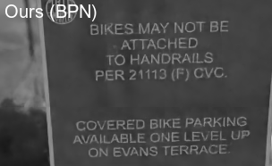

Basis Prediction Networks for Effective Burst Denoising with Large Kernels CVPR 2020
- Zhihao Xia WUSTL
- Federico Perazzi Facebook
- Michaël Gharbi Adobe Research
- Kalyan Sunkavalli Adobe Research
- Ayan Chakrabarti WUSTL
Example Results
  Abstract
Bursts of images exhibit significant self-similarity across both time and space. This motivates a representation of the kernels as linear combinations of a small set of basis elements. To this end, we introduce a novel basis prediction network that, given an input burst, predicts a set of global basis kernels --- shared within the image --- and the corresponding mixing coefficients --- which are specific to individual pixels. Compared to other state-of-the-art deep learning techniques that output a large tensor of per-pixel spatiotemporal kernels, our formulation substantially reduces the dimensionality of the network output. This allows us to effectively exploit larger denoising kernels and achieve significant quality improvements (over 1dB PSNR) at reduced run-times compared to state-of-the-art methods.